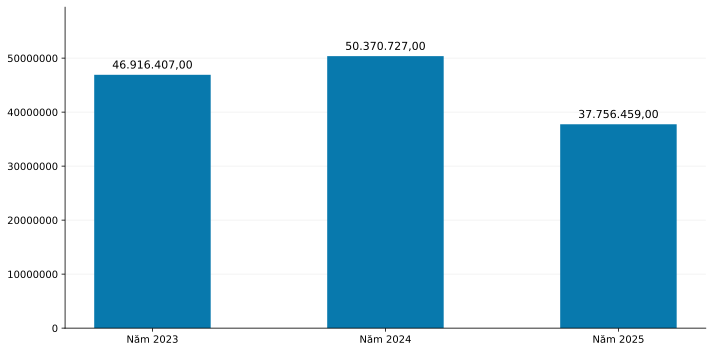
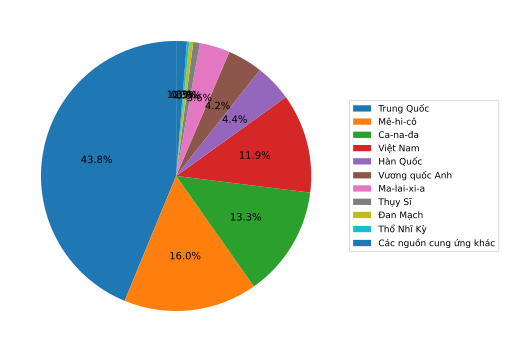
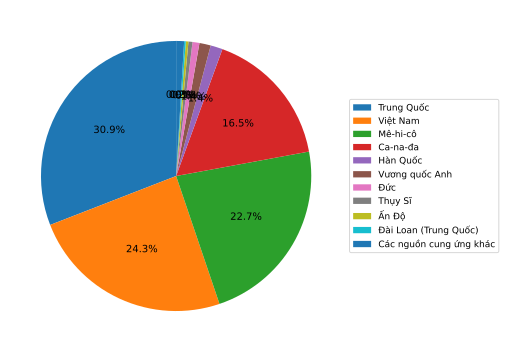
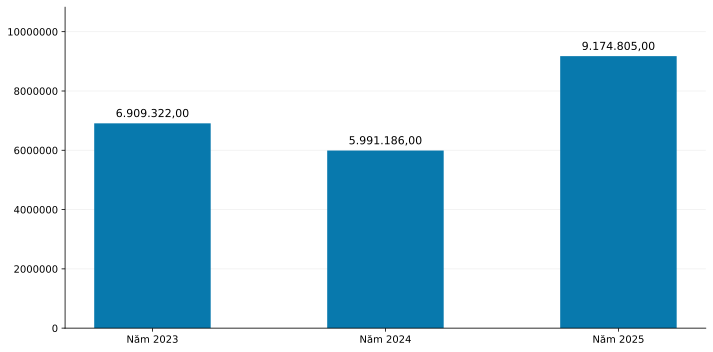
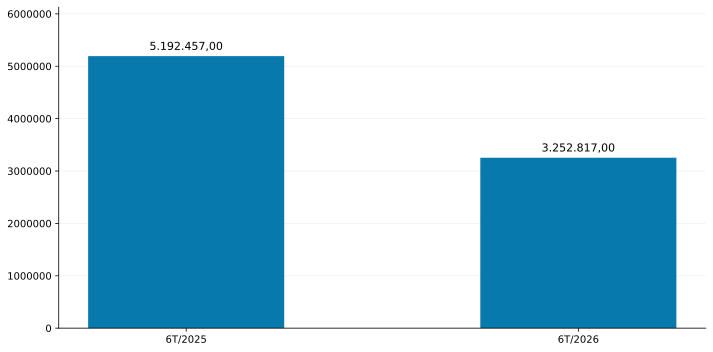

Ca-na-đa khởi xướng rà soát hành chính thuế chống bán phá giá và chống trợ cấp đối với sản phẩm ghế bọc đệm nhập khẩu từ Trung Quốc và Việt Nam
Ngày 31/7/2026, Cơ quan Dịch vụ Biên giới Ca-na-đa (CBSA) thông báo khởi xướng rà soát hành chính thuế chống bán phá giá (CBPG) và thuế chống trợ cấp (CTC) đối với sản phẩm ghế bọc đệm (Upholstered Domestic Seating – UDS) có xuất xứ hoặc nhập khẩu từ Trung Quốc và Việt Nam, đồng thời được nhập khẩu từ Hoa Kỳ bởi Công ty Wayfair LLC (mã vụ việc UDS 2026 UP2).
Theo CBSA, ngoài Công ty Wayfair LLC, phạm vi rà soát còn bao gồm các công ty liên kết, các nhà sản xuất và doanh nghiệp thương mại không liên kết có tham gia sản xuất, cung cấp hoặc bán sản phẩm thuộc đối tượng rà soát sang Ca-na-đa thông qua doanh nghiệp này. Wayfair LLC có trách nhiệm chuyển bản câu hỏi điều tra về chống bán phá giá và chống trợ cấp đến các bên liên quan.
Thông tin thu thập trong quá trình rà soát sẽ được CBSA sử dụng để xác định và cập nhật giá trị thông thường, giá xuất khẩu và mức trợ cấp, làm căn cứ tính thuế chống bán phá giá và chống trợ cấp đối với các lô hàng được thông quan sau khi kết thúc đợt rà soát theo quy định của Đạo luật Biện pháp Nhập khẩu Đặc biệt (SIMA). Các bên liên quan phải nộp bản trả lời câu hỏi thông qua Hệ thống nộp hồ sơ điện tử về chống bán phá giá và chống trợ cấp (ACE) của CBSA theo thời hạn quy định.
CBSA cũng lưu ý, trong trường hợp doanh nghiệp hoặc Chính phủ không cung cấp đầy đủ thông tin hoặc không hợp tác trong quá trình rà soát, cơ quan điều tra có thể sử dụng dữ liệu sẵn có để xác định mức thuế. Đối với hàng hóa của Việt Nam, mức thuế chống bán phá giá có thể lên tới 179,5% giá xuất khẩu, trong khi mức trợ cấp tạm tính có thể được xác định ở mức 1.914.726,79 đồng Việt Nam/chiếc.
Để bảo vệ quyền và lợi ích hợp pháp, các doanh nghiệp sản xuất, xuất khẩu sản phẩm ghế bọc đệm của Việt Nam cần chủ động nghiên cứu các quy định liên quan của Ca-na-đa, hợp tác đầy đủ với CBSA trong quá trình rà soát và cung cấp thông tin theo đúng yêu cầu, thời hạn quy định. Doanh nghiệp cũng nên chủ động phối hợp với Cục Phòng vệ thương mại để được hỗ trợ, cập nhật thông tin và xử lý kịp thời các vấn đề phát sinh trong quá trình vụ việc. Theo quy định tại Điều 104 Nghị định số 86/2025/NĐ-CP, hoạt động hỗ trợ thương nhân Việt Nam trong các vụ việc phòng vệ thương mại ở nước ngoài được thực hiện trên cơ sở đề nghị bằng văn bản của thương nhân hoặc hiệp hội ngành hàng liên quan.
TIN TRONG NƯỚC
Cục Phòng vệ thương mại thông báo tiếp nhận hồ sơ yêu cầu rà soát biện pháp chống bán phá giá đối với một số sản phẩm nhôm có xuất xứ từ Trung Quốc
Ngày 23/9/2024, Bộ Công Thương ban hành Quyết định số 2531/QĐ-BCT về kết quả rà soát cuối kỳ việc áp dụng biện pháp chống bán phá giá đối với một số sản phẩm nhôm có xuất xứ từ Trung Quốc (mã vụ việc AD05).
Căn cứ quy định tại Điều 51 Nghị định số 86/2025/NĐ-CP ngày 11/4/2025 của Chính phủ quy định chi tiết một số điều của Luật Quản lý ngoại thương về các biện pháp phòng vệ thương mại, Cục Phòng vệ thương mại (Cơ quan điều tra) thông báo tiếp nhận hồ sơ yêu cầu rà soát việc áp dụng biện pháp chống bán phá giá đối với sản phẩm nêu trên.
Theo quy định tại Điều 56 Nghị định số 86/2025/NĐ-CP, các bên liên quan có quyền nộp hồ sơ yêu cầu rà soát nếu đáp ứng các điều kiện theo quy định của pháp luật. Hồ sơ yêu cầu rà soát phải bao gồm đầy đủ thông tin, tài liệu theo quy định tại khoản 1 Điều 57 Nghị định số 86/2025/NĐ-CP.
Thời hạn tiếp nhận hồ sơ yêu cầu rà soát chậm nhất là ngày 03/9/2026. Sau thời điểm này, Cơ quan điều tra sẽ xem xét tính đầy đủ, hợp lệ của hồ sơ và xử lý theo trình tự, thủ tục quy định của pháp luật về phòng vệ thương mại.
TIN TRONG NƯỚC
Cục Phòng vệ thương mại ban hành Bản câu hỏi điều tra dành cho nhà sản xuất/xuất khẩu nước ngoài trong vụ việc rà soát nhà xuất khẩu mới đối với một số sản phẩm ván sợi gỗ (mã vụ việc: NR01.AD21)
Ngày 17 tháng 7 năm 2026, Bộ Công Thương ban hành Quyết định số 1784/QĐ-BCT về việc rà soát nhà xuất khẩu mới trong vụ việc áp dụng biện pháp chống bán phá giá đối với một số sản phẩm ván sợi gỗ (mã vụ việc: NR01.AD21).
Thực hiện Quyết định nêu trên, Cục Phòng vệ thương mại đã ban hành và gửi Bản câu hỏi điều tra đến các nhà sản xuất, xuất khẩu nước ngoài có liên quan để thu thập thông tin phục vụ quá trình rà soát. Thời hạn nộp bản trả lời Bản câu hỏi là hết ngày 09 tháng 9 năm 2026 (theo giờ Hà Nội).
Để bảo đảm quyền và lợi ích hợp pháp của mình, Cục Phòng vệ thương mại đề nghị các nhà sản xuất, xuất khẩu nước ngoài hợp tác đầy đủ trong suốt quá trình điều tra, cung cấp thông tin chính xác, đầy đủ và đúng thời hạn theo yêu cầu. Trường hợp doanh nghiệp không nộp bản trả lời đúng hạn hoặc cung cấp thông tin không đầy đủ, không chính xác, Cơ quan điều tra có thể sử dụng thông tin sẵn có để đưa ra kết luận theo quy định của Luật Quản lý ngoại thương.
Việc trả lời Bản câu hỏi, hình thức nộp hồ sơ và các yêu cầu về bảo mật thông tin được thực hiện theo quy định của pháp luật về phòng vệ thương mại và hướng dẫn chi tiết trong Bản câu hỏi điều tra. Cục Phòng vệ thương mại đề nghị các doanh nghiệp nghiên cứu kỹ hướng dẫn và thực hiện đầy đủ các yêu cầu để bảo đảm quyền lợi trong quá trình rà soát.
TIN TRONG NƯỚC
Thông báo gia hạn thời hạn nộp Bản trả lời câu hỏi điều tra đối với nhà sản xuất trong nước và nhà nhập khẩu trong vụ việc rà soát cuối kỳ thép hình chữ H (mã vụ việc: ER02.AD03)
Ngày 19 tháng 6 năm 2026, Bộ Công Thương ban hành Quyết định số 1454/QĐ-BCT về việc điều tra rà soát cuối kỳ áp dụng biện pháp chống bán phá giá đối với một số sản phẩm thép hình chữ H có xuất xứ từ Cộng hòa nhân dân Trung Hoa (mã vụ việc: ER02.AD03).
Thực hiện Quyết định nêu trên, ngày 06 tháng 7 năm 2026, Cục Phòng vệ thương mại ban hành Thông báo số 98/TB-PVTM về việc phát hành Bản câu hỏi điều tra dành cho các nhà sản xuất trong nước và nhà nhập khẩu, với thời hạn nộp bản trả lời trước ngày 13 tháng 8 năm 2026.
Trên cơ sở đề nghị của doanh nghiệp, Cơ quan điều tra đã quyết định gia hạn thời hạn nộp Bản trả lời câu hỏi điều tra đến trước ngày 13 tháng 9 năm 2026 (theo giờ Hà Nội) đối với các nhà sản xuất trong nước và nhà nhập khẩu.
Sau thời hạn nêu trên, trường hợp các bên liên quan không nộp bản trả lời hoặc cung cấp thông tin không đầy đủ theo yêu cầu, Cơ quan điều tra có thể sử dụng các thông tin, dữ liệu sẵn có để đưa ra kết luận theo quy định của pháp luật về phòng vệ thương mại.
Các nội dung khác liên quan đến việc trả lời Bản câu hỏi tiếp tục được thực hiện theo hướng dẫn tại Thông báo số 98/TB-PVTM ngày 06 tháng 7 năm 2026 của Cục Phòng vệ thương mại.
TIN NƯỚC NGOÀI
EU chính thức áp dụng thuế chống bán phá giá đối với sợi filament tổng hợp bằng polyamit (nylon)
Ngày 31/7/2026, Ủy ban châu Âu (EC) ban hành quyết định áp dụng thuế chống bán phá giá chính thức đối với sản phẩm sợi polyamide (nylon) nhập khẩu từ Trung Quốc với mức thuế từ 60% đến 67,5%. Quyết định được ban hành sau khi EC kết luận các nhà sản xuất, xuất khẩu của Trung Quốc đã bán phá giá sản phẩm tại thị trường EU nhằm bảo vệ ngành sản xuất của Liên minh châu Âu (EU) trước các hành vi thương mại không công bằng.
Sợi polyamide (nylon) là nguyên liệu có độ bền cao và tính linh hoạt, được sử dụng rộng rãi trong ngành dệt may để sản xuất quần áo mặc ngoài, trang phục thể thao, tất và đồ bơi.
Vụ việc được khởi xướng trên cơ sở đơn kiện do Liên minh lâm thời các nhà sản xuất sợi polyamide châu Âu (Ad Hoc Coalition of European Producers of Yarns of Polyamide) nộp ngày 16/6/2025 theo quy định tại Điều 5(4) của Quy định cơ bản về chống bán phá giá của EU. Theo EC, hồ sơ của nguyên đơn đã cung cấp đầy đủ bằng chứng ban đầu về hành vi bán phá giá và thiệt hại của ngành sản xuất trong nước, đáp ứng điều kiện để khởi xướng điều tra.
Theo EC, ngành sản xuất sợi polyamide của EU hiện tập trung chủ yếu tại Crô-a-ti-a, Ý, Tây Ban Nha, Ru-ma-ni và Xlô-vê-ni-a, tạo việc làm cho khoảng 2.000 lao động.
EC cho biết việc áp dụng thuế chống bán phá giá đối với sợi polyamide (nylon) là một phần trong các biện pháp mà EU đang triển khai nhằm ứng phó với tình trạng cạnh tranh về giá mà EU cho là không công bằng từ hàng hóa nhập khẩu của Trung Quốc tại nhiều lĩnh vực. Theo EC, biện pháp này vừa duy trì khả năng tiếp cận nguồn hàng nhập khẩu, vừa góp phần khôi phục môi trường cạnh tranh bình đẳng trên thị trường EU.
Bên cạnh đó, EU cũng vừa quyết định áp dụng mức phí hải quan cố định 3 EUR đối với mỗi kiện hàng có giá trị không quá 150 EUR được nhập khẩu từ các quốc gia ngoài EU.
Về phía Trung Quốc, Bộ Thương mại Trung Quốc (MOFCOM) cho rằng các biện pháp do EU áp dụng mang tính bảo hộ thương mại. Theo tài liệu công bố ngày 28/7/2026, MOFCOM cho rằng một số quốc gia đang sử dụng các cáo buộc về tình trạng dư thừa công suất và việc hàng hóa Trung Quốc tràn ngập thị trường quốc tế làm căn cứ để áp dụng các biện pháp phòng vệ thương mại đối với hàng hóa xuất khẩu của Trung Quốc.
MOFCOM đồng thời kêu gọi các quốc gia có cách tiếp cận khách quan và toàn diện hơn đối với diễn biến của thị trường toàn cầu và cho rằng biến động về năng lực sản xuất là hệ quả bình thường của quá trình phát triển công nghiệp và những thay đổi của nền kinh tế thế giới. Theo MOFCOM, thay vì gia tăng các rào cản thương mại, các quốc gia cần tăng cường hợp tác và thúc đẩy việc gỡ bỏ các rào cản đối với chuỗi cung ứng toàn cầu.
Tổng hợp từ just-style.com
TIN NƯỚC NGOÀI
Trung Quốc gia hạn điều tra chống bán phá giá đối với tinh bột đậu Hà Lan nhập khẩu từ Ca-na-đa thêm 06 tháng
Ngày 31/7/2026, Bộ Thương mại Trung Quốc (MOFCOM) thông báo gia hạn thời gian điều tra chống bán phá giá đối với sản phẩm tinh bột đậu Hà Lan nhập khẩu có xuất xứ từ Ca-na-đa thêm 06 tháng, đến ngày 12/02/2027.
Vụ việc điều tra được MOFCOM khởi xướng từ ngày 12/8/2025. Theo quy định tại Điều 26 Quy định về chống bán phá giá của Trung Quốc, trong trường hợp cần thiết, cơ quan điều tra có thể gia hạn thời gian điều tra. Trên cơ sở quy định này, MOFCOM đã quyết định gia hạn điều tra đến ngày 12/02/2027, thay vì kết thúc vào ngày 12/8/2026 như kế hoạch ban đầu.
Tháng 6/2026, MOFCOM ban hành kết luận sơ bộ xác định sản phẩm tinh bột đậu Hà Lan nhập khẩu từ Ca-na-đa được bán phá giá tại thị trường Trung Quốc, gây thiệt hại đáng kể cho ngành sản xuất trong nước và tồn tại mối quan hệ nhân quả giữa hành vi bán phá giá và thiệt hại của ngành sản xuất nội địa.
Trên cơ sở kết luận sơ bộ, từ ngày 01/7/2026, MOFCOM đã áp dụng biện pháp chống bán phá giá tạm thời dưới hình thức ký quỹ. Theo đó, các nhà nhập khẩu sản phẩm tinh bột đậu Hà Lan từ các doanh nghiệp Ca-na-đa phải thực hiện ký quỹ với mức 73,5% khi làm thủ tục nhập khẩu.
Trước đó, vụ việc được MOFCOM khởi xướng điều tra trên cơ sở đơn yêu cầu nộp ngày 26/6/2025 của 06 doanh nghiệp sản xuất tinh bột đậu Hà Lan của Trung Quốc, đại diện cho ngành sản xuất trong nước. Sau khi khởi xướng vụ việc, MOFCOM cho biết cuộc điều tra được tiến hành theo quy định của pháp luật Trung Quốc và các quy định của Tổ chức Thương mại thế giới (WTO). MOFCOM khẳng định sẽ tiến hành điều tra một cách khách quan, công bằng và đưa ra kết luận cuối cùng trên cơ sở kết quả điều tra.
Tổng hợp từ globaltimes.cn
TIN NƯỚC NGOÀI
Pa-ki-xtan khởi xướng điều tra chống bán phá giá đối với sản phẩm đồ sành sứ nhập khẩu từ Trung Quốc
Ngày 31/7/2026, Ủy ban Thuế quan Quốc gia Pa-ki-xtan (NTC) thông báo khởi xướng điều tra chống bán phá giá đối với sản phẩm đồ sành sứ nhập khẩu có xuất xứ hoặc được xuất khẩu từ Trung Quốc, Sản phẩm thuộc phạm vi điều tra là đồ sành sứ, được phân loại theo các mã HS: 6911.1010, 6911.1020, 6911.1030, 6911.1040, 6911.1090 và 6912.0010.
Theo thông báo của NTC, vụ việc được khởi xướng trên cơ sở đơn yêu cầu do Công ty Green Crockery and Housewares (Private) Limited nộp ngày 24/6/2026 theo quy định tại Điều 20 của Luật Thuế chống bán phá giá năm 2015. Nguyên đơn cho rằng các sản phẩm đồ sành sứ có xuất xứ hoặc được xuất khẩu từ Trung Quốc đang được bán phá giá tại thị trường Pa-ki-xtan, gây thiệt hại và đe dọa gây thiệt hại đáng kể cho ngành sản xuất trong nước.
Sau khi xem xét hồ sơ, NTC xác định các thông tin và chứng cứ do nguyên đơn cung cấp đáp ứng điều kiện để khởi xướng điều tra theo quy định tại Điều 23 của Luật Thuế chống bán phá giá năm 2015. Thông qua cuộc điều tra, NTC sẽ rà soát liệu hàng hóa nhập khẩu từ Trung Quốc có được bán phá giá hay không và đánh giá mức độ thiệt hại đối với ngành sản xuất đồ sành sứ trong nước.
NTC thông báo các bên liên quan có trách nhiệm đăng ký tham gia vụ việc trong vòng 10 ngày kể từ ngày ban hành thông báo khởi xướng và gửi các thông tin, chứng cứ, ý kiến bằng văn bản trong thời hạn 45 ngày. Đối với các tài liệu được nộp dưới hình thức bảo mật, các bên liên quan phải đồng thời cung cấp bản không bảo mật để lưu trong hồ sơ công khai của vụ việc.
Theo kế hoạch điều tra, kết luận sơ bộ sẽ được ban hành không sớm hơn 60 ngày và không muộn hơn 180 ngày kể từ ngày khởi xướng điều tra. Kết luận cuối cùng dự kiến sẽ được ban hành trong thời hạn 180 ngày kể từ ngày công bố kết luận sơ bộ.
NTC cũng cho biết đã thiết lập hồ sơ công khai của vụ việc tại trụ sở của cơ quan này ở I-xla-ma-bát để các bên liên quan có thể tra cứu trong giờ làm việc. Thông tin chi tiết về vụ việc cũng được đăng tải trên trang thông tin điện tử chính thức của NTC.
Tổng hợp từ brecorder.com
TIN NƯỚC NGOÀI
Nhật Bản áp dụng thuế chống bán phá giá tạm thời đối với thép mạ kẽm nhúng nóng nhập khẩu từ Trung Quốc và Hàn Quốc
Ngày 04/8/2026, Bộ Kinh tế, Thương mại và Công nghiệp Nhật Bản (METI) cùng Bộ Tài chính Nhật Bản thông báo áp dụng thuế chống bán phá giá tạm thời đối với một số sản phẩm thép mạ kẽm nhúng nóng nhập khẩu từ Trung Quốc và Hàn Quốc nhằm bảo vệ ngành sản xuất thép trong nước trước tình trạng hàng hóa bị cho là bán phá giá.
Theo thông báo, mức thuế chống bán phá giá tạm thời dao động từ 29,2% đến 55,3%, được áp dụng đối với các sản phẩm thép mạ kẽm nhúng nóng dạng cuộn, tấm và dải nhập khẩu từ Trung Quốc và Hàn Quốc trong thời gian từ ngày 08/8/2026 đến ngày 07/12/2026. Biện pháp này không áp dụng đối với hàng hóa có xuất xứ từ Hồng Kông (Trung Quốc) và Ma Cao (Trung Quốc).
Các sản phẩm thuộc phạm vi áp dụng biện pháp chủ yếu là thép được phủ lớp chống ăn mòn, được sử dụng rộng rãi trong lĩnh vực xây dựng như lan can đường bộ, nhà ở, hàng rào và trong sản xuất linh kiện của các thiết bị điện gia dụng như tủ lạnh.
Quyết định trên được đưa ra sau cuộc điều tra kéo dài khoảng một năm, được khởi xướng trên cơ sở đơn kiện do ba doanh nghiệp sản xuất thép lớn của Nhật Bản gồm Nippon Steel, Kobe Steel và Yodoko đệ trình vào tháng 4/2025. Các doanh nghiệp này cho rằng thép nhập khẩu từ Trung Quốc và Hàn Quốc được bán với giá thấp hơn giá thông thường, buộc các nhà sản xuất trong nước phải giảm giá bán, gây ảnh hưởng đáng kể đến hoạt động sản xuất, kinh doanh. Trước đó, vào tháng 7/2026, cơ quan điều tra Nhật Bản đã quyết định gia hạn thời gian điều tra để tiếp tục thu thập thêm dữ liệu, thông tin trước khi ban hành quyết định cuối cùng.
Động thái này là một phần trong xu hướng tăng cường sử dụng các biện pháp phòng vệ thương mại của Nhật Bản trong thời gian gần đây. Trước đó, nước này cũng đã áp dụng thuế chống bán phá giá đối với thép không gỉ cán nguội nền niken và điện cực than chì nhập khẩu từ một số đối tác thương mại tại châu Á nhằm bảo vệ ngành sản xuất trong nước trước các hành vi cạnh tranh không công bằng.
Tổng hợp từ Reuters
TIN NƯỚC NGOÀI
EU gia hạn áp dụng thuế chống bán phá giá đối với sản phẩm ferro-silicon nhập khẩu từ Trung Quốc và Nga
Ủy ban châu Âu (EC) đã quyết định gia hạn áp dụng biện pháp chống bán phá giá đối với sản phẩm ferro-silicon nhập khẩu có xuất xứ từ Trung Quốc và Nga sau khi kết thúc đợt rà soát cuối kỳ lần thứ ba. Kết luận rà soát cho thấy việc chấm dứt các biện pháp hiện hành có khả năng dẫn đến việc tái diễn hành vi bán phá giá và gây thiệt hại đối với ngành sản xuất ferro-silicon của Liên minh châu Âu (EU). Quyết định gia hạn có hiệu lực từ ngày 29/7/2026.
Theo quyết định của EC, mức thuế chống bán phá giá đối với các nhà sản xuất, xuất khẩu của Trung Quốc dao động từ 15,6% đến 31,2%. Cụ thể, Erdos Xijin Kuangye Co., Ltd. chịu mức thuế 15,6%; Lanzhou Good Land Ferroalloy Factory Co., Ltd. chịu mức thuế 29%; các doanh nghiệp Trung Quốc khác chịu mức thuế 31,2%. Đối với Nga, mức thuế chống bán phá giá được duy trì trong khoảng 17,8% đến 22,7%.
Biện pháp áp dụng đối với các sản phẩm ferro-silicon thuộc các mã HS 7202 21 00, 7202 29 10 và 7202 29 90.
Cuộc rà soát cuối kỳ được EC khởi xướng ngày 30/6/2025 trên cơ sở hồ sơ đề nghị của Euroalliages – Hiệp hội các nhà sản xuất hợp kim sắt của châu Âu, đại diện cho ngành sản xuất ferro-silicon của EU. Hồ sơ yêu cầu được nộp ngày 28/3/2025.
Giai đoạn điều tra hành vi bán phá giá được xác định từ 01/01/2024 đến 31/12/2024, trong khi giai đoạn đánh giá thiệt hại kéo dài từ 01/01/2021 đến hết thời kỳ điều tra.
Đây là lần gia hạn thứ ba đối với biện pháp chống bán phá giá này kể từ khi được áp dụng lần đầu vào tháng 02/2008. Biện pháp trước đó đã được gia hạn vào tháng 4/2014 và tháng 7/2020.
Theo số liệu của Tổng cục Hải quan Trung Quốc (GACC), trong năm 2025, Trung Quốc chỉ còn xuất khẩu khoảng 3.415 tấn ferro-silicon sang EU, chiếm khoảng 0,85% tổng lượng ferro-silicon xuất khẩu của nước này. Trong 6 tháng đầu năm 2026, lượng xuất khẩu sang EU đạt khoảng 2.542 tấn.
Tổng hợp từ Mysteel
THÔNG TIN XUẤT NHẬP KHẨU
Cảnh báo đối với xuất khẩu mặt hàng tủ locker bằng kim loại và bộ phận vào thị trường Hoa Kỳ
Mô tả mặt hàng tủ locker bằng kim loại và bộ phận
Tủ locker bằng kim loại và các bộ phận của tủ locker (Certain Metal Lockers and Parts Thereof) là nhóm sản phẩm nội thất, thiết bị lưu trữ được chế tạo chủ yếu từ thép, thép không gỉ, nhôm hoặc các kim loại khác, được thiết kế thành một hoặc nhiều ngăn riêng biệt nhằm phục vụ nhu cầu lưu giữ, bảo quản và quản lý đồ dùng cá nhân, tài liệu, dụng cụ, thiết bị hoặc các loại vật dụng khác. Sản phẩm được sử dụng phổ biến tại trường học, văn phòng, nhà máy, khu công nghiệp, bệnh viện, trung tâm thể thao, phòng tập, siêu thị, trung tâm thương mại, nhà ga, sân bay và nhiều cơ sở công cộng. Đặc trưng cơ bản của tủ locker là kết cấu dạng hộp hoặc khung kim loại có độ bền cao, bên trong được chia thành các khoang hoặc ngăn độc lập; mỗi ngăn thường được trang bị cửa riêng và cơ cấu khóa nhằm bảo đảm an toàn cho tài sản của người sử dụng. Tùy theo mục đích và môi trường sử dụng, tủ có thể được thiết kế dạng một tầng hoặc nhiều tầng, một cột hoặc nhiều cột, dạng đứng, dạng ghép mô-đun hoặc các cấu hình chuyên dụng khác.
Về cấu tạo, tủ locker bằng kim loại thường bao gồm thân tủ, khung tủ, các tấm bên, tấm lưng, tấm trên và tấm đáy, vách ngăn, cửa tủ, bản lề, tay nắm, thanh hoặc móc treo, chân đế và hệ thống khóa. Vật liệu phổ biến nhất là thép cán nguội hoặc thép tấm có độ dày phù hợp, được cắt, đột, dập, uốn và hàn để tạo thành các chi tiết và kết cấu hoàn chỉnh. Bề mặt kim loại thường được xử lý chống gỉ, làm sạch, phosphat hóa hoặc áp dụng các biện pháp xử lý bề mặt tương tự trước khi sơn tĩnh điện, sơn phủ hoặc mạ nhằm nâng cao khả năng chống ăn mòn, chống trầy xước và tăng tính thẩm mỹ. Đối với những môi trường có độ ẩm cao hoặc yêu cầu vệ sinh nghiêm ngặt, sản phẩm có thể được sản xuất từ thép không gỉ hoặc vật liệu kim loại có khả năng chống ăn mòn tốt hơn. Cửa tủ có thể được thiết kế với các khe thông gió, ô nhãn, tay nắm và nhiều loại khóa khác nhau như khóa chìa, khóa số, khóa điện tử, khóa RFID hoặc hệ thống khóa thông minh.
Các bộ phận của tủ locker bằng kim loại bao gồm những chi tiết được sản xuất riêng để lắp ráp, thay thế hoặc hoàn thiện tủ, chẳng hạn như thân hoặc khung tủ, cửa tủ, tấm bên, tấm lưng, tấm đáy, tấm nóc, vách ngăn, kệ, ngăn chứa, chân hoặc bệ tủ và các chi tiết kết cấu bằng kim loại khác. Một số bộ phận có thể được nhập khẩu hoặc xuất khẩu dưới dạng rời, chưa lắp ráp hoàn chỉnh nhưng đã được gia công theo kích thước, hình dạng và thông số kỹ thuật để sử dụng chủ yếu hoặc riêng cho tủ locker. Ngoài các bộ phận kết cấu chính, sản phẩm hoàn chỉnh còn có thể sử dụng các phụ kiện như bản lề, tay nắm, móc treo, thanh treo, khóa và các linh kiện phục vụ việc đóng mở, liên kết hoặc cố định tủ. Việc xác định một chi tiết có thuộc phạm vi “bộ phận của tủ locker” hay không cần căn cứ vào đặc điểm kỹ thuật, công dụng, mức độ gia công và phạm vi sản phẩm cụ thể được quy định trong từng vụ việc hoặc văn bản liên quan.
Xét về công dụng, tủ locker bằng kim loại có ưu điểm nổi bật về độ bền cơ học, khả năng chịu tải, tuổi thọ cao, dễ vệ sinh và có thể sản xuất hàng loạt với nhiều kích thước, kiểu dáng khác nhau. Tủ sử dụng trong trường học thường được thiết kế thành nhiều ngăn để học sinh lưu giữ sách vở và vật dụng cá nhân; tủ tại nhà máy và khu công nghiệp thường phục vụ công nhân lưu giữ quần áo, đồ bảo hộ và tài sản cá nhân; trong khi các loại tủ tại phòng tập thể thao, bệnh viện, văn phòng hoặc cơ sở công cộng có thể được trang bị hệ thống khóa và quản lý hiện đại hơn. Ngoài các sản phẩm tiêu chuẩn, nhà sản xuất có thể thiết kế tủ theo yêu cầu riêng về kích thước, số lượng ngăn, độ dày vật liệu, màu sắc, khả năng thông gió, hệ thống khóa hoặc phương thức lắp đặt.
Về hình thức thương mại, tủ locker bằng kim loại có thể được cung cấp dưới dạng sản phẩm hoàn chỉnh đã lắp ráp, sản phẩm chưa lắp ráp hoặc tháo rời để thuận tiện cho vận chuyển, hoặc các bộ phận riêng biệt dùng để lắp ráp thành tủ hoàn chỉnh. Chính đặc điểm này khiến phạm vi hàng hóa trong các hoạt động thương mại quốc tế và đặc biệt trong các vụ việc phòng vệ thương mại có thể không chỉ giới hạn ở tủ locker hoàn chỉnh mà còn bao gồm một số bộ phận hoặc cụm chi tiết của sản phẩm. Do đó, khi đánh giá mặt hàng phục vụ theo dõi thương mại hoặc phòng vệ thương mại, cần xem xét đồng thời mô tả vật lý, vật liệu cấu thành, công dụng, mức độ gia công, hình thức nhập khẩu và mã phân loại hàng hóa, thay vì chỉ dựa vào tên gọi thương mại của sản phẩm.
Quy trình sản xuất tủ locker bằng kim loại và bộ phận
Quy trình sản xuất tủ locker bằng kim loại và các bộ phận thường bao gồm một chuỗi công đoạn từ lựa chọn nguyên vật liệu, thiết kế kỹ thuật, gia công kim loại, tạo hình, liên kết các chi tiết, xử lý bề mặt, sơn phủ, lắp ráp đến kiểm tra chất lượng và đóng gói sản phẩm. Tùy thuộc vào loại tủ, yêu cầu kỹ thuật, vật liệu sử dụng và mức độ tự động hóa của nhà máy, quy trình cụ thể có thể có những khác biệt nhất định; tuy nhiên, về cơ bản, quá trình sản xuất được thực hiện qua các công đoạn chính sau đây.
Đầu tiên là lựa chọn và chuẩn bị nguyên vật liệu. Nguyên liệu chủ yếu để sản xuất tủ locker thường là thép tấm cán nguội, thép cán nóng đã qua xử lý, thép mạ kẽm, thép không gỉ hoặc một số loại kim loại khác tùy theo yêu cầu của sản phẩm. Trong đó, thép tấm cán nguội được sử dụng tương đối phổ biến do có bề mặt phẳng, khả năng gia công và tạo hình tốt, phù hợp với quá trình sơn phủ. Nguyên liệu đầu vào được kiểm tra về độ dày, kích thước, thành phần, chất lượng bề mặt và các thông số kỹ thuật trước khi đưa vào sản xuất. Ngoài vật liệu kim loại chính, nhà sản xuất còn chuẩn bị các phụ kiện như bản lề, khóa, tay nắm, móc treo, thanh treo, bu lông, đai ốc, vít và các linh kiện cần thiết khác.
Tiếp theo là thiết kế và lập bản vẽ kỹ thuật. Căn cứ vào mục đích sử dụng, số lượng ngăn, kích thước, tải trọng, kiểu khóa và yêu cầu của khách hàng, nhà sản xuất xây dựng bản vẽ chi tiết cho từng bộ phận như tấm bên, tấm lưng, tấm nóc, tấm đáy, cửa, vách ngăn, kệ và khung tủ. Các thông số kỹ thuật này sau đó được chuyển sang hệ thống máy móc gia công, đặc biệt là máy cắt, máy đột dập hoặc thiết bị điều khiển số CNC, nhằm bảo đảm các chi tiết được sản xuất với kích thước và độ chính xác phù hợp để thuận lợi cho quá trình lắp ráp.
Sau khi hoàn thành thiết kế, kim loại được đưa vào công đoạn cắt, đột và gia công chi tiết. Thép tấm hoặc kim loại dạng tấm được cắt thành các phôi theo kích thước quy định bằng máy cắt cơ khí, máy cắt laser hoặc thiết bị CNC. Các phôi sau đó được đột lỗ để tạo vị trí lắp khóa, tay nắm, bản lề, vít liên kết, khe thông gió, ô gắn nhãn và các chi tiết chức năng khác. Đối với cửa tủ locker, công đoạn đột dập có thể tạo các khe hoặc lỗ thông gió nhằm bảo đảm lưu thông không khí bên trong ngăn tủ. Việc sử dụng thiết bị CNC và hệ thống tự động hóa giúp nâng cao độ chính xác, giảm sai số và bảo đảm tính đồng nhất giữa các bộ phận.
Các chi tiết sau khi cắt và đột được chuyển sang công đoạn uốn, gấp và tạo hình. Máy chấn hoặc máy ép được sử dụng để uốn các cạnh của thép tấm theo góc và hình dạng thiết kế, từ đó hình thành các tấm bên, cửa, vách ngăn, kệ, khung và các cấu kiện khác của tủ. Việc gấp mép không chỉ tạo hình sản phẩm mà còn góp phần tăng độ cứng và khả năng chịu lực của các chi tiết kim loại, đồng thời hạn chế các cạnh sắc có thể gây mất an toàn trong quá trình sử dụng. Đây là công đoạn có yêu cầu tương đối cao về độ chính xác vì sai lệch về kích thước hoặc góc uốn có thể ảnh hưởng trực tiếp đến khả năng lắp ghép của sản phẩm.
Sau công đoạn tạo hình là hàn và liên kết các bộ phận. Tùy thiết kế sản phẩm, các cấu kiện có thể được liên kết bằng phương pháp hàn điểm, hàn MIG, hàn điện, đinh tán, vít hoặc các cơ cấu liên kết cơ khí khác. Các bộ phận như khung tủ, tấm bên, tấm lưng, tấm đáy và tấm nóc có thể được liên kết để tạo thành thân tủ hoặc được giữ ở dạng rời nếu sản phẩm được thiết kế theo hình thức tháo lắp. Các mối hàn sau đó được kiểm tra và xử lý, mài nhẵn để loại bỏ phần kim loại dư và bảo đảm bề mặt đồng đều. Đối với các bộ phận được xuất khẩu riêng biệt, quá trình sản xuất có thể kết thúc ở một mức độ gia công nhất định sau khi chi tiết đã có đầy đủ hình dạng và đặc tính cần thiết để lắp ráp thành tủ locker tại công đoạn sau.
Một công đoạn quan trọng tiếp theo là xử lý bề mặt kim loại nhằm loại bỏ dầu mỡ, bụi bẩn, gỉ sét và các tạp chất phát sinh trong quá trình gia công. Các chi tiết có thể trải qua các bước tẩy dầu, rửa, xử lý hóa học, phosphat hóa hoặc các phương pháp tiền xử lý khác để tăng khả năng bám dính của lớp sơn và nâng cao khả năng chống ăn mòn. Chất lượng xử lý bề mặt có ảnh hưởng đáng kể đến độ bền và tuổi thọ của tủ, đặc biệt đối với sản phẩm được sử dụng trong môi trường có độ ẩm cao hoặc có nguy cơ tiếp xúc với các tác nhân ăn mòn.
Sau khi xử lý bề mặt, các chi tiết thường được đưa vào công đoạn sơn phủ, trong đó sơn tĩnh điện dạng bột là phương pháp được sử dụng phổ biến. Bột sơn được phun lên bề mặt kim loại bằng thiết bị phun tĩnh điện, sau đó các chi tiết được đưa vào lò nung ở nhiệt độ phù hợp để lớp sơn nóng chảy, đóng rắn và hình thành lớp phủ đồng đều. Lớp sơn này vừa tạo màu sắc và tính thẩm mỹ, vừa giúp tăng khả năng chống gỉ, chống trầy xước và bảo vệ bề mặt kim loại. Một số loại tủ hoặc bộ phận có thể sử dụng phương pháp mạ, sơn ướt hoặc các công nghệ phủ bề mặt khác tùy theo vật liệu và yêu cầu sử dụng.
Tiếp đó là lắp ráp sản phẩm và phụ kiện. Các bộ phận đã hoàn thiện được ghép lại để hình thành thân tủ và các ngăn chứa; cửa tủ được lắp với bản lề, sau đó lắp khóa, tay nắm, móc treo, thanh treo, kệ, chân đế và các phụ kiện khác. Đối với tủ locker hiện đại, công đoạn này có thể bao gồm lắp đặt khóa số, khóa điện tử, thiết bị RFID hoặc các linh kiện của hệ thống quản lý tủ thông minh. Trường hợp sản phẩm được xuất khẩu dưới dạng tháo rời hoặc bộ phận riêng biệt, nhà sản xuất có thể không thực hiện toàn bộ công đoạn lắp ráp cuối cùng mà phân loại, đóng gói từng cấu kiện để khách hàng hoặc đơn vị nhập khẩu thực hiện việc lắp ráp tại thị trường tiêu thụ.
Cuối cùng là kiểm tra chất lượng, hoàn thiện và đóng gói. Sản phẩm được kiểm tra về kích thước, độ chắc chắn của kết cấu, chất lượng mối hàn và liên kết, khả năng đóng mở của cửa, hoạt động của hệ thống khóa, độ đồng đều của lớp sơn, khả năng chống trầy xước và các yêu cầu kỹ thuật khác. Những sản phẩm đạt yêu cầu được vệ sinh, dán nhãn và đóng gói bằng vật liệu bảo vệ phù hợp nhằm hạn chế trầy xước, móp méo hoặc hư hỏng trong quá trình lưu kho và vận chuyển.
Nhìn chung, sản xuất tủ locker bằng kim loại là quá trình kết hợp giữa gia công cơ khí kim loại, xử lý bề mặt và lắp ráp, trong đó các công đoạn cắt, đột, uốn, hàn, sơn phủ và hoàn thiện quyết định đáng kể đến chất lượng và giá trị của sản phẩm. Đối với hoạt động xuất khẩu và các vụ việc phòng vệ thương mại, việc xác định cụ thể các công đoạn được thực hiện tại Việt Nam, nguồn gốc của thép và các nguyên liệu chính, tỷ lệ giá trị gia tăng trong nước cũng như mức độ gia công đối với từng bộ phận có ý nghĩa đặc biệt quan trọng trong việc chứng minh nguồn gốc sản phẩm, cấu trúc chi phí sản xuất và mức độ chuyển đổi của hàng hóa.
Thị trường tủ locker bằng kim loại và bộ phận của Hoa Kỳ và xu hướng
Hoa Kỳ là thị trường có nhu cầu tương đối lớn đối với tủ locker bằng kim loại và các bộ phận, chủ yếu phục vụ trường học, văn phòng, nhà máy, bệnh viện, trung tâm thể thao, phòng tập, trung tâm thương mại và các công trình công cộng. Trong đó, tủ locker bằng thép được sử dụng phổ biến nhờ độ bền cao, khả năng chịu lực tốt, dễ bảo trì và phù hợp với các khu vực có tần suất sử dụng lớn. Nhu cầu thị trường có mối liên hệ với hoạt động xây dựng, cải tạo và nâng cấp các cơ sở giáo dục, thương mại, công nghiệp và dịch vụ, đồng thời ngày càng đa dạng về kích thước, thiết kế, vật liệu và hệ thống khóa.
Thị trường Hoa Kỳ đang có xu hướng chuyển từ các loại tủ locker truyền thống sang sản phẩm có thiết kế linh hoạt, tính mô-đun và giá trị gia tăng cao hơn. Bên cạnh khóa cơ học truyền thống, các loại khóa số, khóa điện tử, RFID và hệ thống quản lý thông minh ngày càng được quan tâm. Khách hàng cũng chú trọng hơn đến độ bền, khả năng chống ăn mòn, chất lượng lớp phủ, tính thẩm mỹ, khả năng tùy chỉnh và sử dụng vật liệu có thể tái chế. Các sản phẩm có thể tháo rời, dễ vận chuyển, lắp ráp và mở rộng theo nhu cầu của từng dự án có nhiều lợi thế trong cạnh tranh.
Đáng chú ý, thị trường này có mức độ nhạy cảm tương đối cao về phòng vệ thương mại. Hoa Kỳ đã áp dụng các biện pháp chống bán phá giá và chống trợ cấp đối với một số tủ locker bằng kim loại và bộ phận nhập khẩu từ Trung Quốc. Việc này có thể thúc đẩy các nhà nhập khẩu Hoa Kỳ đa dạng hóa nguồn cung và tạo thêm cơ hội cho doanh nghiệp từ các quốc gia khác, trong đó có Việt Nam. Tuy nhiên, sự gia tăng nhanh của xuất khẩu từ Việt Nam, đặc biệt khi có sự dịch chuyển nguồn cung từ Trung Quốc, cũng có thể làm gia tăng nguy cơ bị theo dõi hoặc điều tra về phòng vệ thương mại và chống lẩn tránh.
Nhìn chung, thị trường Hoa Kỳ vẫn có tiềm năng đối với tủ locker bằng kim loại và bộ phận của Việt Nam, nhất là các sản phẩm có chất lượng tốt, thiết kế linh hoạt và giá cả cạnh tranh. Tuy nhiên, doanh nghiệp Việt Nam cần kiểm soát chặt chẽ nguồn gốc nguyên liệu và linh kiện, nâng cao tỷ lệ giá trị gia tăng được tạo ra trong nước, bảo đảm khả năng truy xuất chuỗi cung ứng và thường xuyên theo dõi diễn biến nhập khẩu cũng như chính sách phòng vệ thương mại của Hoa Kỳ để tận dụng cơ hội thị trường đồng thời hạn chế các rủi ro phát sinh.
Tình hình xuất khẩu tủ locker bằng kim loại và bộ phận từ các nguồn trên thế giới sang thị trường Hoa Kỳ
Năm 2023, tổng kim ngạch xuất khẩu tủ locker bằng kim loại và bộ phận từ tất cả các nguồn trên thế giới sang Hoa Kỳ đạt 46,9 triệu USD, trong đó Trung Quốc là nhà cung cấp lớn nhất, tiếp theo là các thị trường như Việt Nam, Ca-na-đa, Mê-hi-cô và Vương quốc Anh. Trong năm 2024, kim ngạch xuất khẩu mặt hàng này sang Hoa Kỳ có sự gia tăng 7,4% so với năm 2023 đạt 50,4 triệu USD. Tuy nhiên, năm 2025, kim ngạch xuất khẩu sang Hoa Kỳ lại có sự sụt giảm 25%, đạt 37,8 triệu USD.
Nhìn chung, trong giai đoạn 2023–2025, dòng thương mại tủ locker bằng kim loại và bộ phận vào Hoa Kỳ có xu hướng đa dạng hóa nguồn cung, trong đó các biện pháp chống bán phá giá và chống trợ cấp đối với Trung Quốc là một trong những yếu tố thúc đẩy sự điều chỉnh của chuỗi cung ứng. Đây là cơ hội để các nguồn cung thay thế, trong đó có Việt Nam, gia tăng sự hiện diện tại thị trường Hoa Kỳ. Tuy nhiên, sự dịch chuyển này đồng thời tạo ra những rủi ro mới về PVTM, nhất là trong trường hợp xuất khẩu từ Việt Nam tăng nhanh, giá xuất khẩu giảm mạnh hoặc chuỗi cung ứng phụ thuộc lớn vào nguyên liệu và cấu kiện có xuất xứ từ Trung Quốc.
Tổng giá trị nhập khẩu tủ locker bằng kim loại và bộ phận của Hoa Kỳ từ 2023 đến 2025
Đơn vị: USD

Nguồn: S&P Global
Năm 2024, Trung Quốc là nguồn cung cấp có trị giá xuất khẩu tủ locker bằng kim loại và bộ phận lớn nhất sang thị trường Hoa Kỳ, đạt 22 triệu USD, chiếm 43,8% tổng kim ngạch nhập khẩu sản phẩm cùng loại của Hoa Kỳ. Mê-hi-cô xếp thứ hai với trị giá xuất khẩu đạt 8,1 triệu USD, chiếm 16% tổng kim ngạch nhập khẩu sản phẩm cùng loại của Hoa Kỳ. Ca-na-đa xếp thứ ba với trị giá xuất khẩu đạt 6,7 triệu USD, chiếm 13,3% tổng kim ngạch nhập khẩu sản phẩm cùng loại của Hoa Kỳ. Việt Nam xếp thứ tư với trị giá xuất khẩu đạt 6 triệu USD, chiếm 11,9% tổng kim ngạch nhập khẩu sản phẩm cùng loại của Hoa Kỳ. Hàn Quốc xếp thứ năm với trị giá xuất khẩu đạt 2,2 triệu USD, chiếm 4,4% tổng kim ngạch nhập khẩu sản phẩm cùng loại của Hoa Kỳ. Vương quốc Anh, Ma-lai-xi-a và Thụy Sĩ lần lượt xếp thứ sáu, thứ bảy và thứ tám với trị giá xuất khẩu đạt 2,1 triệu USD, 1,8 triệu USD và 398,6 nghìn USD. Tổng trị giá xuất khẩu tủ locker bằng kim loại và bộ phận của mười nguồn cung ứng chính sang thị trường Hoa Kỳ đạt 49,7 triệu USD, chiếm 98,7% tổng kim ngạch nhập khẩu sản phẩm cùng loại của Hoa Kỳ. Tổng trị giá xuất khẩu tủ locker bằng kim loại và bộ phận của các nguồn cung ứng khác đạt 645,6 nghìn USD, chiếm 1,3% tổng kim ngạch nhập khẩu sản phẩm cùng loại của Hoa Kỳ.
Năm 2025, Trung Quốc tiếp tục là nguồn cung cấp có trị giá xuất khẩu tủ locker bằng kim loại và bộ phận lớn nhất sang thị trường Hoa Kỳ, đạt 11,7 triệu USD, chiếm 30,9% tổng kim ngạch nhập khẩu sản phẩm cùng loại của Hoa Kỳ. Việt Nam xếp thứ hai với trị giá xuất khẩu đạt 9,2 triệu USD, chiếm 24,3% tổng kim ngạch nhập khẩu sản phẩm cùng loại của Hoa Kỳ. Mê-hi-cô xếp thứ ba với trị giá xuất khẩu đạt 8,6 triệu USD, chiếm 22,7% tổng kim ngạch nhập khẩu sản phẩm cùng loại của Hoa Kỳ. Ca-na-đa xếp thứ tư với trị giá xuất khẩu đạt 6,2 triệu USD, chiếm 16,5% tổng kim ngạch nhập khẩu sản phẩm cùng loại của Hoa Kỳ. Hàn Quốc, Vương quốc Anh và Đức lần lượt xếp thứ năm, thứ sáu và thứ bảy với trị giá xuất khẩu đạt 546 nghìn USD, 512,1 nghìn USD và 311,1 nghìn USD. Tổng trị giá xuất khẩu tủ locker bằng kim loại và bộ phận của mười nguồn cung ứng sang thị trường Hoa Kỳ đạt 37,4 triệu USD, chiếm 99,1% tổng kim ngạch nhập khẩu sản phầm cùng loại của Hoa Kỳ. Tổng trị giá xuất khẩu tủ locker bằng kim loại và bộ phận của các nguồn cung ứng khác đạt 357,6 nghìn USD, chiếm 0,9% tổng kim ngạch nhập khẩu sản phẩm cùng loại của Hoa Kỳ.
Các nguồn cung ứng chính sang thị trường Hoa Kỳ năm 2024 và 2025
Đơn vị: USD
Nguồn cung ứng vào Hoa Kỳ
Trị giá NK năm 2024
Trị giá NK năm 2025
2025 so với 2024
Tỷ trọng năm 2024
Tỷ trọng năm 2025
Trung Quốc
22.049.126
11.666.803
-47,1%
43,8%
30,9%
Việt Nam
5.991.186
9.174.805
53,1%
11,9%
24,3%
Mê-hi-cô
8.054.385
8.571.535
6,4%
16,0%
22,7%
Ca-na-đa
6.684.242
6.242.343
-6,6%
13,3%
16,5%
Hàn Quốc
2.234.074
545.971
-75,6%
4,4%
1,4%
Vương quốc Anh
2.110.115
512.127
-75,7%
4,2%
1,4%
Đức
71.617
311.105
334,4%
0,1%
0,8%
Thụy Sĩ
398.583
182.714
-54,2%
0,8%
0,5%
Ấn Độ
18.319
117.100
539,2%
0,0%
0,3%
Đài Loan (Trung Quốc)
33.798
74.397
120,1%
0,1%
0,2%
Nguồn: S&P Global
Trong 6 tháng đầu năm 2026, tổng kim ngạch nhập khẩu tủ locker bằng kim loại và bộ phận của Hoa Kỳ giảm 17,1% so với cùng kỳ năm trước đó, đạt 16,4 triệu USD. Mê-hi-cô là nguồn cung cấp tủ locker bằng kim loại và bộ phận lớn nhất sang thị trường Hoa Kỳ, đạt 5,2 triệu USD, chiếm 31,5% tổng kim ngạch nhập khẩu sản phẩm cùng loại của Hoa Kỳ. Trung Quốc xếp thứ hai trong số các nguồn cung ứng lớn tủ locker bằng kim loại và bộ phận sang thị trường Hoa Kỳ với kim ngạch xuất khẩu đạt 4 triệu USD, chiếm 24,3% tổng kim ngạch nhập khẩu sản phẩm cùng loại của Hoa Kỳ. Việt Nam xếp thứ ba trong số các nguồn cung ứng lớn tủ locker bằng kim loại và bộ phận sang thị trường Hoa Kỳ với kim ngạch xuất khẩu đạt 3,3 triệu USD, chiếm 19,8% tổng kim ngạch nhập khẩu sản phẩm cùng loại của Hoa Kỳ. Ca-na-đa xếp thứ tư trong số các nguồn cung ứng lớn tủ locker bằng kim loại và bộ phận sang thị trường Hoa Kỳ với kim ngạch xuất khẩu đạt 2,9 triệu USD, chiếm 17,4% tổng kim ngạch nhập khẩu sản phẩm cùng loại của Hoa Kỳ. Thái Lan xếp thứ năm trong số các nguồn cung ứng lớn tủ locker bằng kim loại và bộ phận sang thị trường Hoa Kỳ với kim ngạch xuất khẩu đạt 456,2 nghìn USD, chiếm 2,8% tổng kim ngạch nhập khẩu sản phẩm cùng loại của Hoa Kỳ. Cộng hòa Séc, Ác-hen-ti-na và Thổ Nhĩ Kỳ lần lượt xếp thứ sáu, thứ bảy và thứ tám với trị giá xuất khẩu đạt 132,6 nghìn USD, 78,2 nghìn USD và 64,5 nghìn USD.
Các nguồn cung ứng chính sang thị trường Hoa Kỳ trong 6 tháng đầu năm 2025 và 2026
Đơn vị: USD
Nguồn cung ứng vào Hoa Kỳ
Trị giá NK 6 tháng/2025
Trị giá NK 6 tháng/2026
6T/2026 so với 6T/2025
Tỷ trọng 2026
Mê-hi-cô
4.134.450
5.173.408
25,1%
31,5%
Trung Quốc
6.555.166
3.991.711
-39,1%
24,3%
Việt Nam
5.192.457
3.252.817
-37,4%
19,8%
Ca-na-đa
2.439.228
2.858.385
17,2%
17,4%
Thái Lan
456.228
N/A
2,8%
Cộng hòa Séc
132.569
N/A
0,8%
Ác-hen-ti-na
78.154
N/A
0,5%
Thổ Nhĩ Kỳ
20.880
64.516
209,0%
0,4%
Áo
1.175
64.458
5385,8%
0,4%
Thụy Điển
6.925
59.518
759,5%
0,4%
Nguồn: S&P Global
Tỷ trọng các nguồn cung ứng chính xuất khẩu sang Hoa Kỳ năm 2024

Nguồn: S&P Global
Tỷ trọng các nguồn cung ứng chính xuất khẩu sang Hoa Kỳ năm 2025

Nguồn: S&P Global
3. Tình hình xuất khẩu tủ locker bằng kim loại và bộ phận của Việt Nam sang thị trường Hoa Kỳ
Năm 2023, trị giá xuất khẩu mặt hàng tủ locker bằng kim loại và bộ phận của Việt Nam đạt 6,9 triệu USD, chiếm 14,7% tổng kim ngạch nhập khẩu mặt hàng tủ locker bằng kim loại và bộ phận của Hoa Kỳ, Việt Nam xếp thứ hai trong số các nguồn cung cấp tủ locker bằng kim loại và bộ phận sang thị trường Hoa Kỳ. Năm 2024, trị giá xuất khẩu mặt hàng này của Việt Nam có sự sụt giảm 13,3%, đạt 11,9 triệu USD, chiếm 11,9% tổng kim ngạch nhập khẩu mặt hàng cùng loại của Hoa Kỳ, Việt Nam xếp thứ tư trong số các nguồn cung cấp tủ locker bằng kim loại và bộ phận sang thị trường Hoa Kỳ. Năm 2025, tổng kim ngạch xuất khẩu mặt hàng tủ locker bằng kim loại và bộ phận của Việt Nam có sự gia tăng trở lại 53,1% so với năm trước đó, đạt 9,2 triệu USD, chiếm 24,3% tổng kim ngạch nhập khẩu mặt hàng này của Hoa Kỳ, Việt Nam xếp thứ hai trong số các nguồn cung cấp tủ locker bằng kim loại và bộ phận sang thị trường Hoa Kỳ.
Tổng trị giá xuất khẩu tủ locker bằng kim loại và bộ phận của Việt Nam sang Hoa Kỳ từ năm 2023 đến 2025
Đơn vị: USD

Nguồn: S&P Global
Trong 6 tháng đầu năm 2025, trị giá xuất khẩu tủ locker bằng kim loại và bộ phận của Việt Nam sang thị trường Hoa Kỳ đạt 5,2 triệu USD, chiếm 26,2% tổng kim ngạch nhập khẩu sản phẩm cùng loại của Hoa Kỳ, Việt Nam xếp thứ hai trong số các nguồn cung cấp tủ locker bằng kim loại và bộ phận sang thị trường Hoa Kỳ. Trong 6 tháng đầu năm 2026, trị giá xuất khẩu tủ locker bằng kim loại và bộ phận của Việt Nam giảm 37,4% so với cùng kỳ năm trước, đạt 3,3 triệu USD, chiếm 19,8% tổng kim ngạch nhập khẩu sản phẩm cùng loại của Hoa Kỳ, Việt Nam xếp thứ ba trong số các nguồn cung cấp tủ locker bằng kim loại và bộ phận sang thị trường Hoa Kỳ.
Trị giá xuất khẩu tủ locker bằng kim loại và bộ phận của Việt Nam sang Hoa Kỳ trong 6 tháng đầu năm 2025 và 2026
Đơn vị: USD

Nguồn: S&P Global
Cảnh báo và khuyến nghị
Hoa Kỳ đã áp thuế chống bán phá giá và chống trợ cấp đối với sản phẩm tủ locker bằng kim loại và bộ phận nhập khẩu từ Trung Quốc.
Đây là sản phẩm đang chịu đồng thời biện pháp chống bán phá giá và chống trợ cấp đối với Trung Quốc. Trong bối cảnh xu hướng dịch chuyển đơn hàng khỏi Trung Quốc diễn ra mạnh mẽ, nếu xuất khẩu của Việt Nam sang Hoa Kỳ tiếp tục tăng nhanh và gia tăng thị phần đáng kể, nguy cơ bị Hoa Kỳ xem xét điều tra chống bán phá giá, chống trợ cấp hoặc chống lẩn tránh biện pháp phòng vệ thương mại trong tương lai cần được theo dõi chặt chẽ. Doanh nghiệp cần đặc biệt lưu ý đến nguồn gốc nguyên liệu và khả năng chứng minh quá trình sản xuất thực chất tại Việt Nam.
Để chủ động phòng ngừa rủi ro, trước hết các doanh nghiệp cần thường xuyên theo dõi diễn biến xuất khẩu tủ locker bằng kim loại và bộ phận của Việt Nam sang Hoa Kỳ, bao gồm kim ngạch, lượng xuất khẩu, tốc độ tăng trưởng, thị phần và giá xuất khẩu bình quân. Những dấu hiệu như lượng xuất khẩu tăng đột biến, thị phần của Việt Nam tăng nhanh, giá xuất khẩu giảm đáng kể hoặc Việt Nam dần thay thế nguồn cung từ một quốc gia đang chịu thuế phòng vệ thương mại cần được coi là các tín hiệu cảnh báo. Doanh nghiệp cũng cần theo dõi tình hình sản xuất, tiêu thụ, giá bán và hoạt động của các nhà sản xuất tủ locker hoặc sản phẩm kim loại tương tự tại Hoa Kỳ, bởi sự suy giảm về doanh thu, lợi nhuận, sản lượng, việc làm hoặc thị phần của ngành sản xuất Hoa Kỳ trong bối cảnh nhập khẩu tăng là những yếu tố có thể thúc đẩy ngành sản xuất trong nước nộp đơn yêu cầu điều tra.
Bên cạnh đó, doanh nghiệp cần xây dựng và duy trì hệ thống truy xuất nguồn gốc nguyên liệu đầy đủ, minh bạch và có khả năng kiểm chứng. Hồ sơ nên bao gồm hợp đồng mua nguyên liệu, hóa đơn, chứng từ thanh toán, tờ khai nhập khẩu, chứng nhận xuất xứ, định mức sử dụng nguyên vật liệu, phiếu nhập, xuất kho, lệnh sản xuất và hồ sơ thể hiện từng công đoạn sản xuất tại Việt Nam. Đặc biệt, đối với doanh nghiệp sử dụng nguyên liệu hoặc linh kiện nhập khẩu, cần xác định rõ tỷ trọng nguyên liệu nhập khẩu trong giá thành sản phẩm và mức độ chuyển đổi của nguyên liệu sau quá trình sản xuất tại Việt Nam. Việc lưu trữ hồ sơ một cách có hệ thống không chỉ phục vụ yêu cầu về xuất xứ mà còn có ý nghĩa quan trọng nếu doanh nghiệp phải trả lời bảng câu hỏi hoặc tham gia xác minh tại chỗ trong một vụ việc phòng vệ thương mại của Hoa Kỳ.
Các doanh nghiệp cũng cần hoàn thiện hệ thống kế toán và quản trị chi phí theo từng sản phẩm, từng mã hàng và từng thị trường xuất khẩu. Số liệu về nguyên vật liệu trực tiếp, lao động trực tiếp, chi phí sản xuất chung, khấu hao, chi phí tài chính, chi phí bán hàng và quản lý cần được ghi nhận đầy đủ, nhất quán và có khả năng đối chiếu với báo cáo tài chính đã kiểm toán. Trong trường hợp phát sinh điều tra, khả năng cung cấp dữ liệu chính xác và đúng thời hạn có ảnh hưởng rất lớn đến kết quả của doanh nghiệp. Việc không hợp tác, hợp tác không đầy đủ hoặc cung cấp thông tin không thể kiểm chứng có thể dẫn đến việc cơ quan điều tra Hoa Kỳ sử dụng các dữ kiện bất lợi có sẵn, từ đó làm tăng đáng kể mức thuế phòng vệ thương mại áp dụng đối với doanh nghiệp.
Về chiến lược kinh doanh, doanh nghiệp Việt Nam cần hạn chế cạnh tranh bằng cách giảm giá quá mức để nhanh chóng mở rộng thị phần tại Hoa Kỳ; thay vào đó, nên hướng tới nâng cao giá trị gia tăng, chất lượng, thiết kế, độ bền, tính năng và khả năng đáp ứng các tiêu chuẩn kỹ thuật của sản phẩm. Đồng thời, cần đa dạng hóa khách hàng và thị trường xuất khẩu, tránh phụ thuộc quá lớn vào một số nhà nhập khẩu Hoa Kỳ hoặc để xuất khẩu sang Hoa Kỳ chiếm tỷ trọng quá cao trong tổng doanh thu. Doanh nghiệp cũng cần thận trọng với các đề nghị từ đối tác nước ngoài về việc chuyển nguyên liệu, linh kiện hoặc bán thành phẩm sang Việt Nam để gia công, lắp ráp rồi xuất khẩu sang Hoa Kỳ, nhất là khi sản phẩm hoặc nguyên liệu có liên quan đang chịu thuế chống bán phá giá hoặc chống trợ cấp tại Hoa Kỳ.
Ngoài ra, các doanh nghiệp nên thiết lập cơ chế cảnh báo nội bộ và phối hợp thường xuyên với Cục Phòng vệ thương mại, hiệp hội ngành hàng và các đơn vị tư vấn chuyên môn để cập nhật sớm thông tin về các vụ việc điều tra mới, thay đổi phạm vi sản phẩm bị áp dụng biện pháp, điều tra chống lẩn tránh và các quy định liên quan của Hoa Kỳ. Khi xuất hiện dấu hiệu có khả năng khởi xướng điều tra, doanh nghiệp cần chủ động rà soát ngay dữ liệu xuất khẩu, giá bán, chi phí sản xuất, nguồn nguyên liệu, quan hệ với nhà cung cấp và khách hàng, thay vì chỉ chuẩn bị sau khi vụ việc đã chính thức được khởi xướng.
Nhìn chung, trong trường hợp xuất khẩu tủ locker bằng kim loại và bộ phận của Việt Nam sang Hoa Kỳ tiếp tục tăng trưởng nhanh, doanh nghiệp cần coi rủi ro phòng vệ thương mại là một yếu tố thường xuyên trong chiến lược xuất khẩu. Việc chủ động kiểm soát tốc độ tăng trưởng xuất khẩu, duy trì chính sách giá hợp lý, nâng cao tỷ lệ giá trị gia tăng tạo ra tại Việt Nam, bảo đảm minh bạch về xuất xứ và chuỗi cung ứng, hoàn thiện hệ thống kế toán, truy xuất nguồn gốc và xây dựng phương án ứng phó từ sớm sẽ giúp doanh nghiệp giảm thiểu nguy cơ bị điều tra cũng như nâng cao khả năng bảo vệ quyền và lợi ích hợp pháp nếu phát sinh vụ việc phòng vệ thương mại tại Hoa Kỳ.
 BỘ CÔNG THƯƠNG
BỘ CÔNG THƯƠNG